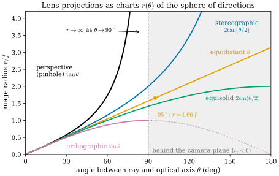

27.1 The Camera as a Smooth Map
Goals
- pinhole projection \(\varphi\)가 submersion이고 그 fiber가 카메라 중심에서 나가는 열린 반직선(ray)이라는 것을 \(J = D\varphi\)의 rank와 kernel로 보이고, “투영은 깊이를 잃는다”를 \(\ker J_t = \R t\)로 정확히 말할 수 있다.
- pose와 intrinsics가 각각 \(\R^3\)과 image plane의 좌표 변경이라는 것, 그리고 surface를 투영하면 ray가 surface에 접하는 곳(silhouette)에서 rank가 떨어진다는 것을 설명할 수 있다.
- Brown–Conrady 형태의 lens distortion이 중심 근처에서 diffeomorphism이고 어떤 반지름에서 접혀(fold) diffeomorphism이 아니게 되는지 계산할 수 있다.
- 모든 central camera를 “방향으로 정규화한 뒤 \(S^2\)의 chart를 쓰는 것”으로 보고, pinhole(gnomonic chart)과 fisheye(equidistant chart 등)의 차이, 화각 \(180^\circ\)의 벽, 3DGS의 \(J\)가 카메라 모델마다 바뀌어야 하는 이유를 말할 수 있다.
Prerequisites
- Section 0.6: smooth map, diffeomorphism, differential은 chart에서 Jacobian matrix다(Definition 0.6.5), chain rule (0.6.5), \(\RP^2\)와 그 chart \(\varphi_3\)(Example 0.6.4)
- Section 0.3: tangent plane \(T_pS\)와 unit normal \(\mathbf{N}\)(Definition 0.3.3)
- Section 0.5: 왜곡 없는 sphere의 지도는 없다(Corollary 0.5.3), conformal map과 넓이 보존 지도, cube map
- Section 0.8: sphere의 logarithm map (0.8.5)
- pinhole camera model(\(f_x, f_y, c_x, c_y\)), COLMAP의 camera model, 3DGS와 NeRF가 ray를 만드는 방식 [HZ], [Kerbl23], [Mildenhall20]
Motivation
Tour(Section 0.6)에서 smooth map과 그 differential을 배웠고, Section 0.8은 Part IV로 가는 길을 예고하며 끝났다. 3D vision에서 가장 먼저, 가장 자주 만나는 smooth map은 카메라다. 3D 점을 픽셀로 보내는 이 map을 differential geometry의 눈으로 보면 실무에서 경험칙으로 알던 것들이 정리된다.
- “투영은 깊이를 잃는다”는 정확히 무슨 뜻인가? 3DGS의 \(J\)가 \(Jt_0 = 0\)을 만족하는 것은 우연인가?
- 왜 3DGS의 공식 코드는 undistorted pinhole 영상만 받는가? fisheye 영상을 쓰려면 무엇을 바꿔야 하는가?
- lens distortion의 다항식은 어디까지 믿을 수 있는가? 화면 밖의 점을 투영했더니 화면 안에 찍히는 일은 왜 생기는가?
- 화각이 \(180^\circ\)를 넘는 fisheye는 왜 pinhole 모델로 표현할 수 없는가?
이 절의 답은 하나의 그림으로 모인다. central camera는 모두 “3D 점을 방향(sphere \(S^2\)의 점)으로 정규화한 뒤, \(S^2\)의 chart 하나를 쓰는 것”이다. pinhole, fisheye, intrinsics, distortion은 모두 chart를 고르거나 바꾸는 일이다.
The Projection and Its Differential
skew가 없는 pinhole camera의 투영은
이다 [HZ]. 정의역은 카메라 앞쪽의 open half-space이고, 분모 \(t_z\)가 \(0\)이 아니므로 \(\varphi\)는 smooth map이다. 미분하면 \(2 \times 3\) Jacobian matrix
를 얻는다. 이것이 3DGS의 \(J\)다((29.3.3)). 둘째 식은 첫째 열에 \(t_x\), 둘째 열에 \(t_y\), 셋째 열에 \(t_z\)를 곱해 더하면 바로 확인된다. 처음 두 열이 이루는 \(2 \times 2\) determinant는 \(f_xf_y/t_z^2 \ne 0\)이므로 \(J_t\)의 rank는 언제나 \(2\)다.
differential이 모든 점에서 surjective인 smooth map을 submersion(침몰)이라 한다. submersion에서는 한 점의 preimage \(\varphi^{-1}(u)\), 곧 fiber(올)가 (정의역 dimension) − (공역 dimension)차원의 submanifold다(정확한 진술은 regular value theorem, Go deeper). 카메라에서는 \(3 - 2 = 1\)이다.
Proposition 27.1.1 (the pinhole projection is a submersion whose fibers are rays). \(\varphi\)는 submersion이다. 각 pixel \(u\)의 fiber는 카메라 중심에서 나가는 열린 반직선
\[ \begin{aligned} \varphi^{-1}(u) &= \{\lambda\,(\bar u_x, \bar u_y, 1) : \lambda \gt 0\}, \\ \bar u_x &= \frac{u_x - c_x}{f_x},\ \ \bar u_y = \frac{u_y - c_y}{f_y} \end{aligned} \]
이고, 그 접선 방향이 kernel이다: \(\ker J_t = \R t\).
Derivation. rank는 위에서 보았다. \(\varphi(t) = u\)는 \(t_x = t_z\bar u_x\), \(t_y = t_z\bar u_y\)와 같고 \(t_z \gt 0\)은 자유롭다. 이것이 반직선이다. rank–nullity theorem에 의해 \(\dim\ker J_t = 3 - 2 = 1\)이고 \(J_tt = 0\)이므로 \(\ker J_t = \R t\)다. 반직선 위의 곡선 \(\lambda \mapsto \lambda t\)의 velocity가 \(t\)이므로 kernel은 fiber의 tangent line이다.
![두 패널. 왼쪽 (a)는 3D 그림으로, 왼쪽 끝의 카메라 중심 O에서 회색 ray들이 오른쪽 안쪽으로 부채꼴(사각뿔)로 퍼진다. O 가까이에 하늘색 사각형(image plane t_z = 1)이 있고 그 위의 파란 점들이 pixel이다. 회색 점선 사각형은 t_z = 3.5인 평면이다. 주황 ray 하나 위에 점 t_0이 있고, t_0에서 ray를 따라 파란 화살표(ker J), ray를 가로질러 초록 화살표(v)가 나온다. 오른쪽 (b)는 가로축 t_x, 세로축 t_z(depth)인 cross-section이다. 원점 O에서 회색 직선들이 부채꼴로 퍼지고 왼쪽 위에 'rays = level sets of u_x'라고 적혀 있다. t_z = 1에 검은 가로선(image line)이 있다. 주황 직선(u_x = 0.5) 위의 점 t_0에서 파란 화살표 k ∈ ker J가 같은 직선을 따라 위로, 초록 화살표 v가 직선에 수직으로 오른쪽 아래로 나온다. O에서 t_0 + v를 지나는 초록 점선이 image line과 만나는 초록 점이 주황 점 오른쪽에 있고, 그 사이에 초록 화살표와 'Jv = 0.233 (exact 0.257)'이 적혀 있다. 주황 점 위에는 'Jk = 0'이 있다.](figures/fig-27-1-1-fibers-kernel.svg)
Figure 27.1.1의 (a)부터 보자. 카메라 중심 \(O\)에서 나가는 회색 반직선마다 image plane의 pixel이 하나씩 대응한다. 같은 반직선 위의 점은 모두 같은 pixel로 가므로, 반직선이 곧 fiber다. (b)는 이것을 \(t_xt_z\)-평면으로 자른 것이다. 회색 직선들이 \(u_x\)의 level set이고, 점 \(t_0\)에서 출발한 파란 화살표 \(k\)는 level set을 따라가므로 image가 그대로다. 초록 화살표 \(v\)는 level set을 가로지르므로 image가 image line 위에서 오른쪽으로 움직인다. differential \(J\)는 이 움직임의 1차 근사를 준다.
이제 “투영은 깊이를 잃는다”를 정확히 말할 수 있다. 잃는 것은 fiber 위의 좌표 하나이고, 그 무한소판이 \(\ker J_t = \R t\)다. 3DGS가 \(J\Sigma J^{\mathsf T}\)로 covariance를 화면에 보낼 때 ray 방향의 퍼짐이 1차로 사라지는 것(Section 29.3), 화면의 metric을 3D로 당기면 rank 2인 행렬이 되어 ray 방향의 길이를 \(0\)으로 재는 것(Section 29.1)은 모두 이 한 사실의 다른 얼굴이다. 잃지 않는 것도 분명하다. 깊이를 제외한 두 방향은 rank 2로 화면에 그대로 전달된다. 깊이를 되찾으려면 다른 정보가 필요하다. 두 번째 카메라의 fiber와 교차하거나(Section 27.3의 triangulation) depth sensor가 fiber 위의 좌표를 직접 재야 한다(Section 30.4의 back-projection).
Poses and Intrinsics Are Changes of Coordinates
실제 파이프라인의 투영은 world 좌표에서 시작한다. pose \(g(x) = Rx + T\)는 \(\R^3\)에서 \(\R^3\)으로 가는 diffeomorphism(rigid motion)이고, 전체 투영은 \(\varphi \circ g\)이다. chain rule (0.6.5)에 의해
이다. 마지막 등호는 \(R^{\mathsf T}t = R^{\mathsf T}(Rx + T) = x - c\)에서 나온다. world 좌표에서도 fiber는 카메라 중심 \(c\)에서 나가는 반직선이다. pose를 \(\R^6\)의 점이 아니라 Lie group \(\mathrm{SE}(3)\)의 점으로 다루는 이유와 그 위의 미분은 Chapter 28이 다룬다(Definition 28.1.1, Section 28.2).
intrinsics도 좌표 변경이다. normalized projection \(\bar\varphi(t) = \bar u = (t_x/t_z,\ t_y/t_z)\)와 intrinsic matrix
로 쓰면 \(\varphi = A_{\mathsf K} \circ \bar\varphi\)이다. 여기서 \(\mathsf K_2 = \begin{pmatrix} f_x & s \\ 0 & f_y \end{pmatrix}\)는 \(\mathsf K\)의 왼쪽 위 블록이고 \(s\)는 skew다. (27.1.1)은 \(s = 0\)인 경우이고, COLMAP과 OpenCV의 pinhole 계열 모델도 skew를 두지 않는다. \(A_{\mathsf K}\)는 invertible affine map이므로 \(\R^2\)의 diffeomorphism이고, \(\bar u\)와 \(u\)는 같은 대상을 두 좌표로 적은 것이다. 같은 대상이 무엇인지는 아래 Every Central Camera Is a Chart of the Sphere에서 분명해진다. 카메라를 지나는 방향들의 공간이고, \(\bar u\)는 그 chart, \(u\)는 affine하게 바꾼 chart다. calibration [Zhang00]은 이 chart 변경을 추정하는 일이다. 좌표를 affine하게 바꾸었을 뿐이므로 \(\ker J\)는 그대로이고, \(J\)는 \(\mathsf K_2\)를 왼쪽에 곱해 바뀐다(Exercise 27.1.5).
Silhouettes: Where the Projection of a Surface Loses Rank
장면은 3D 공간 전체가 아니라 surface다. regular surface \(S\)(camera 좌표로 쓴다, \(S \subseteq \{t_z \gt 0\}\))만 보면 투영은 2차원에서 2차원으로 가는 map \(\varphi|_S\)가 되고, 그 differential은 \(J_t\)를 tangent plane \(T_tS\)에 제한한 것이다. \(\ker J_t = \R t\)이므로 rank가 떨어지는 곳은 한 군데뿐이다.
Proposition 27.1.2 (rank of the projection of a surface). \(t \in S\)에서 \(d(\varphi|_S)_t = J_t|_{T_tS}\)의 rank는 \(\inner{\mathbf N(t)}{t} \ne 0\)이면 \(2\), \(\inner{\mathbf N(t)}{t} = 0\)이면 \(1\)이다. 두 singular value의 곱은 \(f = f_x = f_y\)일 때
이다(\(\alpha\)는 ray와 optical axis 사이의 각이다. 뒤의 lens 소절에서 Kannala–Brandt를 따라 \(\theta\)로 쓰는 것과 같은 양이고, 여기서는 (30.4.3)과 같은 기호를 쓴다). \(\mathbf N\)을 어느 쪽으로 골라도 식은 같다.
Derivation. \(J_t|_{T_tS}\)의 kernel은 \(T_tS \cap \R t\)이다. 이것은 \(t \in T_tS\), 곧 ray가 surface에 접할 때만 \(0\)이 아니고, 그 조건이 \(\inner{\mathbf N}{t} = 0\)이다. 곱 \(\sigma_1\sigma_2\)는 넓이의 배율이다. surface 조각 \(dA\)가 카메라에서 차지하는 solid angle은 \(\abs{\inner{\mathbf N}{\hat t}}\,dA/\abs{t}^2\)이고, normalized image plane에서 solid angle \(d\Omega\)가 차지하는 넓이는 \(d\Omega/\cos^3\alpha\)이며, 여기에 \(f^2\)를 곱한다. 셋을 곱하고 \(\abs{t} = t_z/\cos\alpha\)를 넣으면 (27.1.5)다. 곧 \(\sigma_1\sigma_2\)는 (30.4.3)의 pixel footprint \(\sqrt{EG - F^2} = d^2\cos\alpha/(f_xf_y\abs{\cos\theta})\)의 역수다(그 식의 depth \(d\)가 여기의 \(t_z\)이고, \(\abs{\cos\theta}\)가 \(\abs{\inner{\mathbf N}{\hat t}}\)다). depth map은 \(\varphi|_S\)의 inverse이기 때문이다. 검산으로, Example 27.1.3의 sphere에서 보이는 부분 위로 \(\int\sigma_1\sigma_2\,dA\)를 수치적분하면 silhouette 원의 넓이 \(\pi/8 = 0.3927\)이 나온다(verify).
ray가 surface에 접하는 점들이 occluding contour이고, 그 image가 silhouette이다. contour에서 \(\varphi|_S\)는 종이를 접은 것처럼 접힌다. 앞면과 뒷면이 contour에서 만나고, 둘 다 contour의 image 한쪽으로 투영된다. 그래서 silhouette은 surface 위의 특별한 곡선이 아니라 카메라에 따라 정해지는 곡선이다. 카메라가 움직이면 contour도 surface 위에서 미끄러진다.
Example 27.1.3 (silhouette of a sphere). 중심 \((0, 0, 3)\), 반지름 \(1\)인 sphere를 \(f = 1\)인 카메라로 본다. contour 조건 \(\inner{\mathbf N}{t} = 0\)은 \(t = (0,0,3) + \mathbf N\)에서 \(3N_z + 1 = 0\), 곧 \(N_z = -1/3\)이다. contour는 카메라에서 \(\sqrt{3^2 - 1} = 2.828\)만큼 떨어진 원이고(깊이 \(t_z = 8/3\)), 그 위의 ray는 optical axis와 \(\arcsin(1/3) = 19.47^\circ\)를 이룬다. silhouette은 반지름 \(\tan 19.47^\circ = 1/\sqrt8 = 0.354\)인 원이다. cross-section \(t_y = 0\)의 meridian 위의 점을 카메라에 가장 가까운 점에서 잰 각 \(\psi\)로 쓰면 contour는 \(\psi_c = \arccos(1/3) = 70.53^\circ\)다.
Verification: verify/v-27-1-camera-smooth-map.py
![두 패널. 왼쪽 (a)는 가로축 t_x, 세로축 t_z(depth)인 cross-section으로, 원점 O에서 위쪽의 원(sphere의 cross-section)으로 주황 직선 두 개가 원에 접하며 뻗는다. 원의 아래쪽 호(카메라 쪽)는 검은 실선이고 'visible', 위쪽 호는 회색 점선이고 'hidden'이다. 두 접점은 주홍 점이며 오른쪽 접점에 'contour: ray lies in T_pS'라고 적힌 화살표가 있다. ψ = 25°, 50°인 점에 파란 선분(tangent line)과 O에서 그 점을 지나는 회색 선(ray)이 있다. 오른쪽 아래의 상자에 ray와 tangent line 사이의 각이 ψ = 25°에서 53.6°, ψ = 50°에서 22.0°, contour에서 0°라고 적혀 있다. 오른쪽 (b)는 가로축 ψ(0도부터 180도), 세로축 singular value인 그래프다. 파란 곡선 σ_out = 1/t_z는 0.5에서 0.25로 천천히 내려간다. 주홍 곡선 σ_in은 0.5에서 시작해 ψ = 70.5도에서 0으로 내려갔다가 다시 0.25로 올라가고, 그 위의 ψ = 25°, 50°에 검은 점이 있다. 70.5도에 주황 점선과 'contour ψ_c = 70.5°'가 있고, 그 오른쪽은 회색으로 칠해진 'back (hidden)' 영역이다. 0인 점을 가리키는 'rank 1' 화살표가 있다.](figures/fig-27-1-2-silhouette.svg)
Figure 27.1.2의 (a)에서 파란 tangent line을 \(\psi = 25^\circ\)에서 \(50^\circ\), 그리고 contour로 따라가 보자. tangent line이 점점 ray(회색) 쪽으로 기울고(둘 사이의 각이 \(53.6^\circ\), \(22.0^\circ\), \(0^\circ\)), contour에서는 ray와 겹친다. 그 순간 tangent plane 안의 한 방향이 \(\ker J\)에 들어가 화면에서 사라진다. (b)의 주홍 곡선이 그 방향의 배율이다. 두 검은 점이 (a)의 두 점이고, 곡선은 정확히 \(\psi_c\)에서 \(0\)에 닿는다. meridian 방향의 단위 tangent vector \(w\)에 대해 \(\abs{Jw} = \abs{t}\sin\angle(t, w)/t_z^2\)이므로, 배율은 (a)의 각의 sine에 비례한다. cross-section에 수직인 방향(파랑)은 언제나 ray와 수직이므로 rank는 \(1\)까지만 떨어진다. depth map이 silhouette에서 끝나고 그 근처에서 depth의 기울기가 발산하는 이유(Section 30.4)가 이것이다. depth map은 \(\varphi|_S\)의 local inverse이므로, \(\varphi|_S\)의 rank가 떨어지는 곳에서는 inverse function theorem의 가정이 성립하지 않고 smooth한 local inverse가 없다.
Lens Distortion: A Diffeomorphism Near the Center
실제 렌즈는 (27.1.1)을 정확히 따르지 않는다. 표준 처방은 normalized image plane에서 한 번 더 map \(\mathcal D\)를 걸어 \(\varphi = A_{\mathsf K} \circ \mathcal D \circ \bar\varphi\)로 쓰는 것이다. Brown이 정리한 radial·tangential(decentering) 모델 [Brown71]을 OpenCV와 COLMAP의 OPENCV 모델은 \(\bar u = (x, y)\), \(r^2 = x^2 + y^2\)에 대해 \(\mathcal D = (\mathcal D_x, \mathcal D_y)\)를
로 쓴다(COLMAP의 sensor/models/opencv.h, OpenCV calib3d.hpp의 문서. OpenCV는 \(k_3r^6\)과 유리식 항을 더할 수 있다. radial factor를 \(L(r)\)로 쓰는 것은 [HZ]를 따른 것이고, \(g\)는 이 절에서 pose에 쓴다). \(\mathcal D\)는 다항식이므로 smooth map이고, \(\mathcal D(0) = 0\)이며, tangential 항은 2차식이라 원점에서의 differential에 기여하지 않으므로 \(D\mathcal D(0) = I_2\)이다. inverse function theorem에 의해 \(\mathcal D\)는 원점 근처에서 diffeomorphism이다. 영상의 중심부에서 distortion은 chart를 조금 휘게 바꾸는 좌표 변경일 뿐이다.
“근처”가 얼마나 넓은지는 계산할 수 있다. tangential 항을 빼면 \(\mathcal D\)는 반지름 \(r\)을 \(r_d = r\,L(r)\)로 보내고 방향은 그대로 두는 map이다. 반지름 방향의 배율은 \(dr_d/dr = (rL)'\), 원주 방향의 배율은 \(r_d/r = L\)이므로
이다. \(k_1 \lt 0\)(barrel distortion)이면 \((rL)'\)가 먼저 \(0\)이 된다(\(k_2 = 0\)이면 \((rL)' = 0\)은 \(r^2 = 1/(3\abs{k_1})\), \(L = 0\)은 \(r^2 = 1/\abs{k_1}\)이다). 그 첫 반지름을 \(r^*\)라 하면 \(\mathcal D\)는 disk \(\{r \lt r^*\}\)에서 그 image로 가는 diffeomorphism이고, \(r^*\)에서 반지름 방향으로 접힌다(fold). \(r^*\)를 넘으면 \(r_d\)가 다시 줄어들어, 바깥의 원이 안쪽 원과 같은 곳으로 간다.
Example 27.1.4 (where a one-coefficient barrel model folds).
\(k_1 = -0.3\), \(k_2 = p_1 = p_2 = 0\)이라 하자(COLMAP의 SIMPLE_RADIAL 모델이 이 꼴이다). \((rL)' = 1 - 0.9r^2 = 0\)에서 \(r^* = 1/\sqrt{0.9} = 1.054\)이고, 이것은 ray와 optical axis 사이의 각 \(\theta^* = \arctan r^* = 46.5^\circ\)에 해당한다. 이때 \(r_d\)의 최댓값은 \(0.703\)이다.
- 수평 화각 \(90^\circ\), 가로세로 \(4:3\)인 pinhole 영상의 모서리 방향은 undistorted normalized 반지름 \(\sqrt{1 + 0.75^2} = 1.25 \gt r^*\)(\(\theta = 51.3^\circ\))에 있다. 이 모델로 그만큼의 화각을 덮으려 하면 모서리 방향이 이미 fold 바깥이다.
- \(r = 1.5\)(\(\theta = 56.3^\circ\))의 점은 \(r_d = 0.4875\)로 가고, 이것은 \(r = 0.533\)(\(\theta = 28.1^\circ\))의 점과 같은 곳이다. \(\theta = 60^\circ\)의 점은 \(r_d = 0.173\), 곧 영상 중심 가까이에 찍힌다. \(r = 1/\sqrt{0.3} = 1.826\)(\(61.3^\circ\))에서는 \(L = 0\)이라 원 전체가 영상 중심 한 점으로 간다.
- \(k_2 = 0.03\)을 더하면 \(r^* = 1.214\)(\(50.5^\circ\))로 늘어나고, \(k_2 = 0.1\)이면 \((rL)' = 1 - 0.9r^2 + 0.5r^4\)(\(r^2\)에 대한 2차식)의 판별식 \(0.81 - 2\)가 음수라서 fold가 없다.
Verification: verify/v-27-1-camera-smooth-map.py
![두 패널. 왼쪽 (a)는 가로축 undistorted radius r(0부터 2), 세로축 distorted radius r_d인 그래프이고 위쪽에 ray angle θ 눈금(0, 20, 40, 50, 60도)이 있다. 회색 점선 r_d = r 아래에 세 곡선이 있다. 주홍(k_2 = 0)은 r* = 1.054에서 꼭대기 0.70에 이른 뒤('fold r* = 1.054 (46.5°)'라는 화살표) 내려가 r = 1.83 근처에서 0이 된다. 주황(k_2 = 0.03)은 r* = 1.214에서 꼭대기에 이른 뒤 천천히 내려간다. 파랑(k_2 = 0.1)은 계속 올라간다. 꼭대기마다 점과 점선 세로선이 있다. r = 1.25에 회색 점선 세로선과 'corner of a 90°, 4:3 image'가 있다. r = 0.533과 r = 1.5의 두 주홍 사각형이 높이 0.49의 주홍 점선으로 이어져 있고 'give the same r_d = 0.49'라고 적혀 있다. 오른쪽 (b)는 distorted 좌표 평면으로, 반지름 0.703인 검은 점선 원 안에 파란 격자가 둥글게 부풀어 있고, 네 모서리 근처에서 주황 선들이 원 안쪽으로 되접혀 있다. 오른쪽 위의 주홍 별에 'grid corner (1.2, 0.9), r = 1.5, lands inside'라는 화살표가 있다.](figures/fig-27-1-3-distortion-fold.svg)
Figure 27.1.3의 (a)에서 주홍 곡선을 왼쪽부터 따라가 보자. 처음에는 대각선 \(r_d = r\) 바로 아래에 붙어 있다(\(D\mathcal D(0) = I_2\)). 반지름이 커질수록 대각선에서 멀어지고, \(r^* = 1.054\)에서 기울기가 \(0\)이 된 뒤 내려간다. 기울기가 \(0\)인 곳에서 \(\det D\mathcal D = 0\)이고, 거기가 diffeomorphism의 끝이다. (b)는 같은 일을 영상으로 보여 준다. 파란 격자는 둥글게 부푼 barrel 모양이지만 아직 겹치지 않는다. 주황 격자는 fold 원(점선)에 닿은 뒤 되돌아와 파란 격자 위에 겹친다. 같은 pixel에 서로 다른 두 방향의 빛이 기록된다는 뜻이다.
\(\mathcal D\)의 inverse(undistortion)는 일반적으로 닫힌 꼴이 없다. radial 항만 있어도 \(r L(r) = r_d\)는 \(r\)에 대한 고차 다항방정식이다. 그래서 반복으로 푼다. COLMAP은 autodiff로 계산한 \(D\mathcal D\)로 Newton iteration을 최대 100번 하고 한 걸음의 크기를 제한한다(sensor/models/base.h의 IterativeUndistortionScalar). OpenCV의 undistortPoints는 fixed-point iteration을 쓰고 기본 반복 횟수는 5다(undistort.dispatch.cpp). 어느 쪽이든 distorted 점에서 출발하므로 fold 안쪽의 해(위의 예에서 \(r = 0.533\))로 간다(verify에서 Newton과 fixed-point iteration 모두 \(0.533\)에 수렴함을 확인했다. fold 원에 가까운 점에서는 \(D\mathcal D\)가 singular에 가까워 수렴이 느려진다). fold 바깥의 해는 되찾을 수 없다. 그 영역에서 \(\mathcal D\)가 일대일이 아니기 때문이다. Kannala와 Brandt도 fisheye 모델에 대해, 실제 렌즈의 parameter에서 \(r(\theta)\)가 \([0, \theta_{\max}]\)에서 monotonically increasing이므로 inverse를 계산할 때 그 구간의 실근을 고르면 된다고 적는다 [Kannala06]. 단조성이 inverse를 고를 수 있게 하는 조건이라는 점은 같다.
Every Central Camera Is a Chart of the Sphere
pinhole, fisheye, distortion을 한 관점으로 보자. 모든 ray가 한 점 \(O\)를 지나는 카메라를 central camera라 한다. 이런 카메라가 기록하는 것은 3D 점 \(t\)가 아니라 그 방향
이다. \(\nu\colon \R^3 \setminus \{0\} \to S^2\)도 submersion이고, 그 fiber는 원점에서 나가는 열린 반직선이다(Proposition 27.1.1과 같은 계산이다). 카메라 모델의 차이는 오직 chart \(\kappa\)의 차이다. chart \(\kappa\)는 diffeomorphism이므로 어떤 central camera든 \(\ker J_t = \ker d\nu_t = \R t\)이다. 3DGS의 \(Jt_0 = 0\)은 pinhole에서만 성립하는 우연이 아니다.
pinhole의 chart는 \(\kappa(\omega) = (\omega_x/\omega_z,\ \omega_y/\omega_z)\)이고 정의역은 open hemisphere \(\{\omega_z \gt 0\}\)다. sphere의 중심에서 tangent plane \(t_z = 1\)로 투영하는 이 chart가 지도 제작의 gnomonic projection(심사도법)이고, cube map의 각 면이 이것이다(Section 0.5). 또 \(S^2\)에서 \(\omega\)와 \(-\omega\)를 같게 본 \(\RP^2\)의 chart \(\varphi_3[x : y : w] = (x/w,\ y/w)\)(Example 0.6.4)를 hemisphere에 제한한 것이기도 하다. 이 사실이 Section 27.2의 출발점이다. fisheye 렌즈는 다른 chart를 쓴다. ray와 optical axis 사이의 각 \(\theta\)와 방위각을 보존하고 반지름만 \(r = f\,r(\theta)\)로 정하는 radially symmetric chart다.
Example 27.1.5 (five lens projections as charts of \(S^2\)). Kannala와 Brandt가 정리한 다섯 projection [Kannala06]을 chart로 보면, \(\theta\) 방향(반지름 방향)과 방위 방향의 배율은 각각 \(r'(\theta)\)와 \(r(\theta)/\sin\theta\)다(\(f = 1\), sphere 위의 길이를 image 위의 길이로 바꾸는 비율).
| projection | \(r(\theta)\) | radial | azimuthal | preserves |
|---|---|---|---|---|
| perspective (gnomonic) | \(\tan\theta\) | \(1/\cos^2\theta\) | \(1/\cos\theta\) | great circles \(\to\) lines |
| stereographic | \(2\tan\frac{\theta}{2}\) | \(1/\cos^2\frac{\theta}{2}\) | \(1/\cos^2\frac{\theta}{2}\) | angles |
| equidistant | \(\theta\) | \(1\) | \(\theta/\sin\theta\) | distance from the axis |
| equisolid | \(2\sin\frac{\theta}{2}\) | \(\cos\frac{\theta}{2}\) | \(1/\cos\frac{\theta}{2}\) | area |
| orthographic | \(\sin\theta\) | \(\cos\theta\) | \(1\) | — |
chart로 쓸 수 있는 범위는 perspective와 orthographic이 \(\theta \lt 90^\circ\)(open hemisphere), 나머지 셋이 \(\theta \lt 180^\circ\)(\(S^2\)에서 뒤쪽 한 점을 뺀 것)다.
stereographic은 두 배율이 같으므로 conformal이다. 이 chart는 running example의 남극에서의 stereographic projection \(\tilde\sigma(\omega) = (\omega_x, \omega_y)/(1 + \omega_z)\)(반지름 \(\tan(\theta/2)\))를 2배 한 것이다. 북극에서의 \(\sigma\)가 conformal이라는 것은 Example 7.4.9에서 보였고, \(\tilde\sigma(\omega) = -\sigma(-\omega)\)는 그것에 isometry를 합성한 것이므로 역시 conformal이다. equisolid는 두 배율의 곱이 \(1\)이므로 넓이를 보존한다. orthographic은 Chapter 11의 hemisphere chart다(Example 11.3.4). 다섯 모두 \(\theta = 0\)에서 \(r \approx \theta\)로 일치하지만, Theorema Egregium(Corollary 0.5.3) 때문에 어느 것도 isometry는 아니다. 렌즈마다 다른 것을 지킨다.
Verification: verify/v-27-1-camera-smooth-map.py

Figure 27.1.4를 왼쪽부터 보자. \(\theta = 30^\circ\)까지 다섯 곡선은 거의 하나다. \(60^\circ\)를 지나면 검은 perspective 곡선이 혼자 치솟고, \(90^\circ\)의 세로 점선에 닿기 전에 그래프를 벗어난다. pinhole의 image plane은 무한히 넓어야 \(90^\circ\)에 닿는다. 그래서 pinhole 모델의 화각은 언제나 \(180^\circ\)보다 작다. 이것은 렌즈 설계의 한계가 아니라 chart의 한계다. gnomonic chart는 open hemisphere만 덮고, hemisphere의 경계(\(\theta = 90^\circ\))는 무한대로 간다. 다른 세 fisheye 곡선은 회색 영역으로 그냥 들어간다.
![두 패널. 왼쪽 (a) pinhole = gnomonic chart는 가로 -2.5부터 2.5, 세로 -2.5부터 2.5인 정사각형 영역이다. 가운데 작은 검은 직사각형(정면 벽)과 네 모서리에서 바깥으로 뻗는 검은 직선(벽의 모서리), 아래쪽에 파란 바닥 격자 직선들이 있다. 모든 선이 곧다. 회색 점선 원 두 개에 45도, 60도가 적혀 있다. 왼쪽 아래에 'straight lines stay straight; θ ≥ 90° cannot be shown'이라고 적혀 있다. 오른쪽 (b) fisheye = equidistant chart는 반지름 약 1.66의 검은 점선 원(95도, 190도 렌즈) 안에 같은 방이 그려져 있다. 정면 벽은 조금 둥근 사각형이고, 벽의 모서리 선과 바닥 격자 선이 휘어 있으며 바깥쪽에서 90도 원(회색 실선)을 넘어 점선 원 근처까지 이어진다. 아래쪽의 90도 원을 따라 주황 호(카메라 바로 아래의 바닥선 t_z = 0)가 있고, 점선 원 근처에 짧은 주황 선분 네 개가 있다('orange: t_z ≤ 0'). 회색 점선 원 45도, 60도와 실선 원 90도가 있다.](figures/fig-27-1-5-pinhole-vs-fisheye.svg)
Figure 27.1.5의 두 패널을 비교해 보자. (a)의 직선들은 곧고, 방의 모서리가 정면 벽의 네 corner에서 바깥으로 곧게 뻗는다. 대신 바닥 격자의 간격이 바깥으로 갈수록 급히 벌어지고, 방의 뒤쪽은 아예 없다. (b)는 같은 선들을 휘게 그리지만 반지름이 \(\theta\)에 비례하므로 \(45^\circ\), \(60^\circ\), \(90^\circ\) 원의 반지름이 \(0.79\), \(1.05\), \(1.57\)로 각에 비례한다. (a)에서 그릴 수 없던 바닥 격자선 \(t_z = 0\)이 \(90^\circ\) 원 위에 주황 호로 나타나고, 그 바깥의 짧은 주황 선분이 카메라 평면 뒤쪽의 방 모서리다. 하나의 chart로 hemisphere보다 넓은 영역을 덮으려면 gnomonic이 아닌 chart가 필요하다는 것이 이 그림의 메시지다.
equidistant chart에는 Tour에서 이미 만난 이름이 있다. unit sphere의 logarithm map (0.8.5)을 optical axis \(e_3\)에서 쓰면 \(\log_{e_3}(\omega) = \frac{\theta}{\sin\theta}(\omega - \cos\theta\,e_3)\)이고, 그 처음 두 성분이 정확히 \(\theta\,(\omega_x, \omega_y)/\sqrt{\omega_x^2 + \omega_y^2}\)이다. 곧 equidistant fisheye 영상은 optical axis에서 잡은 sphere의 normal coordinates다(Tour의 Figure 0.8.2를 뒤집어 본 그림이다). 그래서 영상 중심에서 잰 반지름이 sphere 위의 geodesic distance(곧 ray 사이의 각)와 같다.
What This Means for 3DGS and NeRF
3DGS의 rasterizer는 Gaussian마다 \(J\)를 계산해 \(\Sigma_{2D} = J\Sigma_cJ^{\mathsf T}\)를 만든다((29.3.4)). 이 \(J\)는 (27.1.2), 곧 pinhole chart의 differential이다. 그러므로 입력 영상도 정확히 pinhole이어야 한다. 공식 코드는 그렇게 강제한다. scene/dataset_readers.py는 COLMAP의 PINHOLE과 SIMPLE_PINHOLE만 받고 나머지는 “only undistorted datasets … supported”로 멈추며, convert.py는 OPENCV 모델로 SfM을 한 뒤 COLMAP의 image_undistorter로 영상을 pinhole로 다시 sample한다. distortion \(\mathcal D\)를 벗겨 chart를 gnomonic으로 바꾸는 단계다. 또 공식 코드는 COLMAP의 focal length에서 화각(FoV)만 읽고, projection matrix를 symmetric frustum으로 만든다(utils/graphics_utils.py의 getProjectionMatrix). principal point를 영상 중심에 둔다는 뜻이다. undistorted 영상의 \((c_x, c_y)\)가 중심에서 벗어나 있으면 그만큼 chart가 translation되어 쓰인다.
fisheye 영상을 그대로 쓰려면 \(\kappa\)를 바꾸고 \(J\)를 그 chart의 differential로 바꾸면 된다. Section 29.3이 말한 대로다. gsplat 라이브러리는 camera_model="fisheye"에서 equidistant chart \(u = f\theta\,(t_x, t_y)/\sqrt{t_x^2 + t_y^2} + (c_x, c_y)\)와 그 Jacobian matrix를 쓴다(gsplat/cuda/include/Utils.cuh의 fisheye_proj, \(\theta = \operatorname{atan2}(\sqrt{t_x^2 + t_y^2}, t_z)\)). 이 \(J\)가 equidistant chart를 미분한 것과 같고 kernel이 여전히 ray라는 것을 sympy로 확인했다. 두 chart의 차이는 배율에서 드러난다. 같은 거리 \(\abs{t}\)에 있는 Gaussian을 off-axis 각 \(\theta\)에서 보면, pinhole의 \(J\)는 반지름 방향으로 \(1/\cos^2\theta\)배, 방위 방향으로 \(1/\cos\theta\)배 늘인다(\(60^\circ\)에서 4배와 2배). equidistant의 \(J\)는 반지름 방향 1배, 방위 방향 \(\theta/\sin\theta\)배(\(90^\circ\)에서도 \(\pi/2 = 1.57\)배)다. 넓은 화각에서 pinhole의 1차 근사가 나빠지는 이유(Example 29.3.4)의 일부가 chart의 선택에 있다.
NeRF는 반대 방향만 쓴다. pixel마다 ray를 만들 때 \(\kappa^{-1}\)을 계산하고(공식 코드 run_nerf_helpers.py의 get_rays는 \(((i - W/2)/f,\ -(j - H/2)/f,\ -1)\)을 쓴다), 3D 점을 화면으로 보내는 \(\varphi\)는 쓰지 않는다 [Mildenhall20]. 그래서 \(\kappa^{-1}\)을 계산할 수 있는 central camera라면 어떤 모델이든 쓸 수 있다. distortion이 있으면 위의 반복으로 \(\mathcal D^{-1}\)을 계산하면 된다. 이 \(\kappa^{-1}\)의 셋째 성분 \(-1\)은 NeRF가 OpenGL 규약(카메라가 \(-t_z\)를 본다)을 쓰기 때문이다. OpenCV·COLMAP 규약과는 \(\diag(1, -1, -1)\), 곧 \(t_x\)축 둘레의 \(180^\circ\) 회전만큼 다르다. COLMAP pose를 NeRF에 넣을 때 이 회전을 빠뜨리는 것이 흔한 실수다(pose 규약의 대조표는 Section 28.1).
Summary
- pinhole projection \(\varphi\)는 rank 2인 submersion이고 그 fiber는 카메라 중심에서 나가는 열린 반직선이다. “깊이를 잃는다”는 fiber 위의 좌표 하나를 잃는다는 뜻이고, 그 무한소판이 \(\ker J_t = \R t\)다.
- pose는 \(\R^3\)의 diffeomorphism, intrinsics는 image plane의 affine chart 변경이다. 둘 다 \(\ker J\)를 바꾸지 않는다(world 좌표에서는 \(\R(x - c)\)).
- surface의 투영 \(\varphi|_S\)는 \(\inner{\mathbf N}{t} = 0\)인 occluding contour에서만 rank 1로 떨어지고, 넓이 배율은 \(f^2\abs{\inner{\mathbf N}{\hat t}}/(t_z^2\cos\alpha)\)다.
- Brown–Conrady distortion은 \(D\mathcal D(0) = I_2\)라서 중심 근처에서 diffeomorphism이지만, \((rL)' = 0\)인 반지름 \(r^*\)에서 접힌다. \(k_1 = -0.3\)이면 \(r^* = 1.054\)(\(46.5^\circ\))다. inverse는 반복으로 구하고 fold 바깥은 되찾을 수 없다.
- central camera는 모두 \(\kappa \circ \nu\)(방향으로 정규화한 뒤 \(S^2\)의 chart)다. pinhole은 open hemisphere만 덮는 gnomonic chart라서 화각이 \(180^\circ\)보다 작고, equidistant fisheye는 optical axis에서의 normal coordinates다. 3DGS의 \(J\)는 chart의 differential이므로 카메라 모델마다 바뀐다.
다음 절에서는 pinhole이 \(S^2\)가 아니라 \(\RP^2\)의 chart라는 사실을 끝까지 밀고 간다. 카메라를 \(\RP^3\)에서 \(\RP^2\)로 가는 map으로 보면 vanishing point, homography, 그리고 점과 직선이 서로 다르게 변하는 이유가 하나의 linear algebra로 정리된다.
Quick check
Exercise 27.1.1 ★ pose가 \(R = \) (\(y\)축 둘레 \(30^\circ\) 회전), \(T = (0, 0, 4)\)이고 world 점이 \(x = (1, 0, 1)\)이다. camera 좌표 \(t\)와 world 좌표의 카메라 중심 \(c\)를 구하고, \(f = 500\) px일 때 \(D(\varphi \circ g)(x)\)가 \(x - c\)를 \(0\)으로 보냄을 확인하여라.
Solution
\(R = \begin{pmatrix} \cos 30^\circ & 0 & \sin 30^\circ \\ 0 & 1 & 0 \\ -\sin 30^\circ & 0 & \cos 30^\circ \end{pmatrix}\)이므로 \(Rx = (0.866 + 0.5,\ 0,\ -0.5 + 0.866) = (1.366, 0, 0.366)\)이고 \(t = (1.366,\ 0,\ 4.366)\)이다. \(c = -R^{\mathsf T}T = -4\,(-\sin 30^\circ, 0, \cos 30^\circ) = (2,\ 0,\ -3.464)\)이다. \(x - c = (-1,\ 0,\ 4.464)\)이고 \(R(x - c) = t\)이므로((27.1.3)), \(D(\varphi \circ g)(x)(x - c) = J_t\,R(x - c) = J_tt = 0\)이다. world 좌표에서도 깊이 방향은 카메라 중심에서 그 점으로 가는 방향이다.
Verification: verify/v-27-1-camera-smooth-map.py
Exercise 27.1.2 ★ \(k_1 = -0.2\)인 one-coefficient radial 모델(\(k_2 = p_1 = p_2 = 0\))의 fold 반지름 \(r^*\), 그에 해당하는 ray 각, 그리고 \(r_d\)의 최댓값을 구하여라. 이 모델을 diffeomorphism으로 쓸 수 있는 cone의 화각은 얼마인가?
Solution
(27.1.7)에서 \((rL)' = 1 - 0.6r^2 = 0\)이므로 \(r^* = 1/\sqrt{0.6} = 1.291\)이고 \(\theta^* = \arctan 1.291 = 52.2^\circ\)다. \(r_d^* = r^*(1 - 0.2r^{*2}) = r^*(1 - 1/3) = 0.861\)이다. disk \(\{r \lt r^*\}\)에서 \(L \gt 0\)이고 \((rL)' \gt 0\)이므로 \(\det D\mathcal D \gt 0\)이고 radial map이 단조이므로 일대일이다. 그러므로 화각 \(2 \times 52.2^\circ = 104.5^\circ\)의 cone 안에서만 diffeomorphism이다.
Verification: verify/v-27-1-camera-smooth-map.py
Exercise 27.1.3 ★ \(f = 300\) px인 equidistant fisheye의 화각이 \(190^\circ\)다. 영상 원의 반지름은 몇 pixel인가? 같은 \(f\)의 pinhole이라면 \(\theta = 80^\circ\)와 \(89^\circ\)의 방향은 principal point에서 몇 pixel에 찍히는가? 이 결과를 Figure 27.1.4와 연결하여라.
Solution
equidistant에서 \(r = f\theta\)이므로 \(\theta = 95^\circ = 1.658\) rad에서 \(r = 300 \times 1.658 = 497\) px이다. pinhole은 \(r = f\tan\theta\)이므로 \(80^\circ\)에서 \(1701\) px, \(89^\circ\)에서 \(17187\) px이고 \(90^\circ\)에서는 무한대다. Figure 27.1.4의 검은 곡선이 \(90^\circ\)에서 발산하는 것과 같고, 이것은 gnomonic chart의 정의역이 open hemisphere라는 사실이다. \(190^\circ\) 렌즈의 \(\theta \gt 90^\circ\) 부분은 어떤 크기의 pinhole 영상에도 담을 수 없다.
Verification: verify/v-27-1-camera-smooth-map.py
Exercise 27.1.4 ★★ 중심 \((0, 0, 5)\), 반지름 \(2\)인 sphere를 \(f = 1\)인 카메라로 본다. Proposition 27.1.2로 occluding contour를 구하고, silhouette이 반지름 얼마의 원인지 구하여라. contour 위에서 \(d(\varphi|_S)\)의 rank가 1이라는 것은 silhouette 근처의 depth map에 대해 무엇을 말하는가?
Solution
\(t = (0, 0, 5) + 2\mathbf N\)에서 \(\inner{\mathbf N}{t} = 5N_z + 2 = 0\), 곧 \(N_z = -2/5\)이다. contour 점의 깊이는 \(t_z = 5 + 2N_z = 5 - 0.8 = 4.2\)이고 카메라에서의 거리는 \(\sqrt{5^2 - 2^2} = \sqrt{21}\)이다. ray와 optical axis 사이의 각은 \(\arcsin(2/5) = 23.58^\circ\)이므로 silhouette은 반지름 \(\tan 23.58^\circ = 2/\sqrt{21} = 0.436\)인 원이다. contour에서 rank가 1이므로 \(\varphi|_S\)의 local inverse, 곧 depth map은 inverse function theorem으로 보장되지 않는다. silhouette에 다가갈수록 depth의 기울기가 발산한다(Section 30.4).
Verification: verify/v-27-1-camera-smooth-map.py
Exercise 27.1.5 ★★ (27.1.4)에서 \(J = \mathsf K_2\,D\bar\varphi\)임을 보이고, skew \(s \ne 0\)이어도 \(\ker J = \R t\)임을 확인하여라. 3DGS가 \(\Sigma_{2D} = J\Sigma_cJ^{\mathsf T}\)를 pixel 좌표에서 계산하는 것과 normalized 좌표에서 계산한 뒤 바꾸는 것은 같은가?
Solution
\(\varphi = A_{\mathsf K} \circ \bar\varphi\)이고 \(A_{\mathsf K}\)는 affine이며 그 differential이 상수 행렬 \(\mathsf K_2\)이므로 chain rule에서 \(J = \mathsf K_2\,D\bar\varphi\)다. \(\mathsf K_2\)는 invertible(\(\det = f_xf_y \ne 0\))이므로 \(\ker J = \ker D\bar\varphi = \R t\)이다(Proposition 27.1.1을 \(f = 1\)로 쓴 것). pixel 좌표의 covariance는 \(J\Sigma_cJ^{\mathsf T} = \mathsf K_2\,(D\bar\varphi\,\Sigma_c\,D\bar\varphi^{\mathsf T})\,\mathsf K_2^{\mathsf T}\)이므로, normalized 좌표의 covariance를 affine chart 변경 \(\Sigma \mapsto \mathsf K_2\Sigma\mathsf K_2^{\mathsf T}\)((29.1.5))으로 옮긴 것과 정확히 같다.
Verification: verify/v-27-1-camera-smooth-map.py